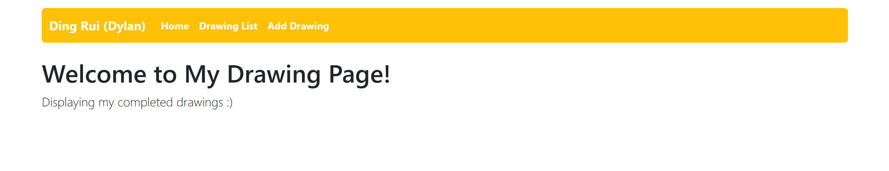
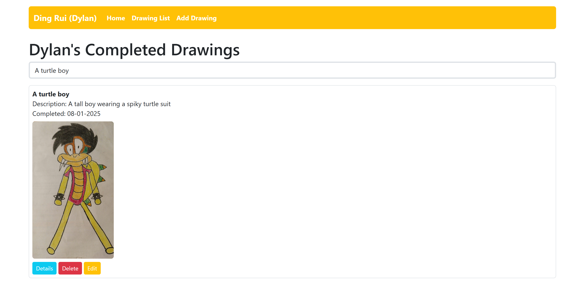
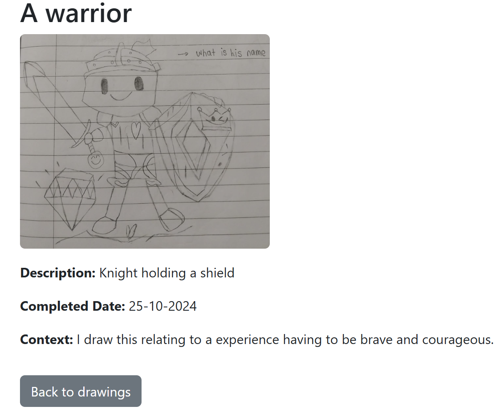
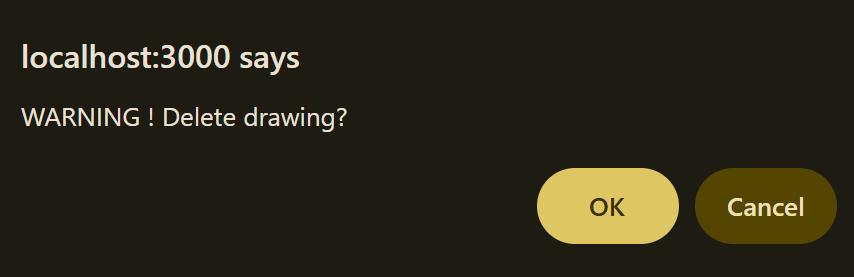
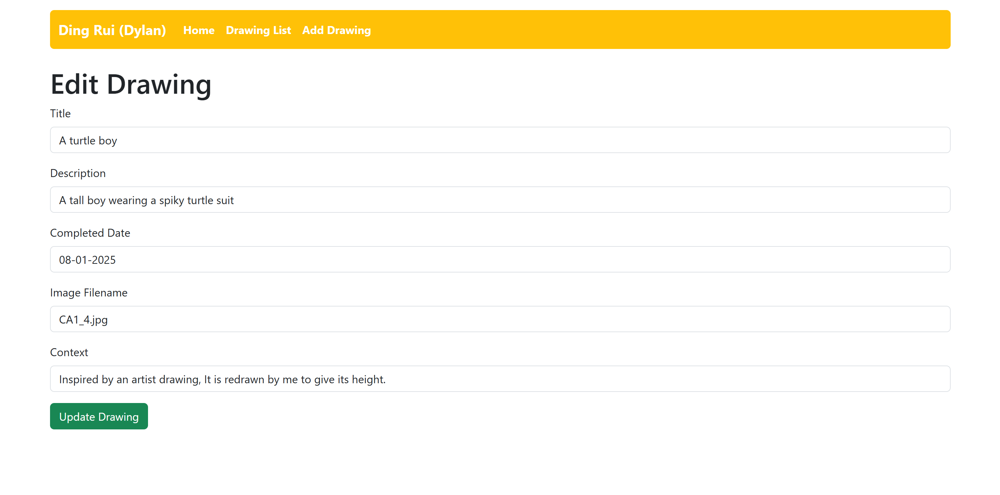
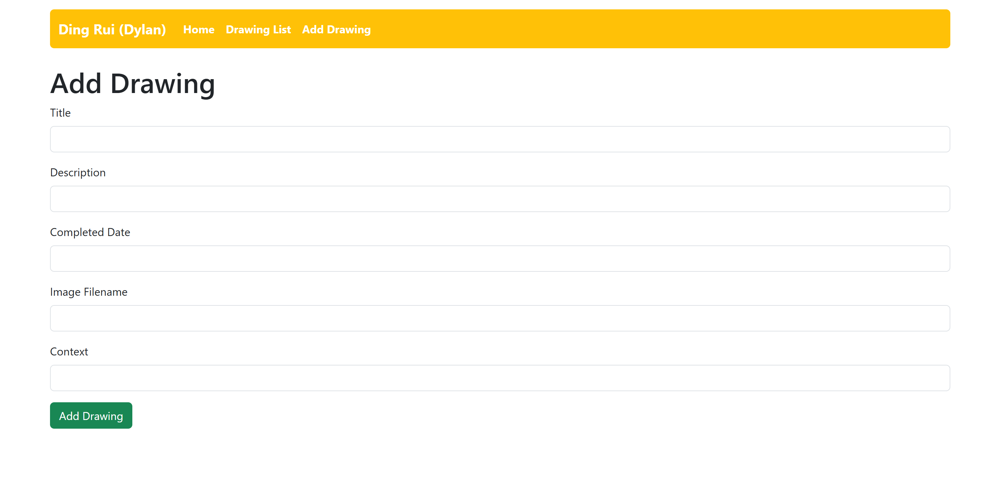

JavaScript hobby website


Objectives:
To create an simple hobby website as part of mini project by applying knowledge of web development by building a fully functional Node.js Express web application. This project requires the ability to handle routing, form submission and display of information using only GET and POST methods with in-memory data
Technical Competencies:
Functionalites:
Navigation Bar
Toggle between home, drawing list, add drawing
/ route (home page)
Display Greeting text
/lists route
Display of completed drawings with each drawing wrapped with a thin light grey border.
Each drawing consists:
• Details button to direct to separate detail page (/details/:id get route)
to view drawing details.
• Edit Button and Delete Button
• Its title, description, image, completion date.
/addItem get route
Retrieve the fields (data) for adding drawings:
• Title
• Description
• Completed Date
• Image
• Details
/addItem post route
Sumbit the require fields (data) and redirect users to /lists route.
/updateItem get route
Retrieve the pre-populated fields (data) from drawings:
• Title
• Description
• Completed Date
• Image
• Details
/updateItem post route
Sumbit the updated fields (data) and redirect users to /lists route.
/details/:id get route
Upon Clicking details button, users are directed to each drawing with details shown.
Upon Clicking back to drawings button, users are directed back to lists drawing (/lists route).
/deleteItem/:id post route
Upon Clicking delete button, a pop up browser warning delete prompt to confirm deletion.
Building process:
Based on technical rules, only node.js and express.js can be used. Databases, REST APIs, or templates (E.g. EJS, Pug, etc) and view engines like EJS cannot be used. Only GET and POST methods can be used for this particular website. Bootstrap must be applied which CSS cannot be applied resulting in constraints of the webpage design. Instead of the standard black navbar, I chose navbar to be yellow because it is my favourite colour. It consists of 5 main routes which each page serving its different functionalities, its built using GET and POST methods with in-memory data.
View the pictures to see the different routes





